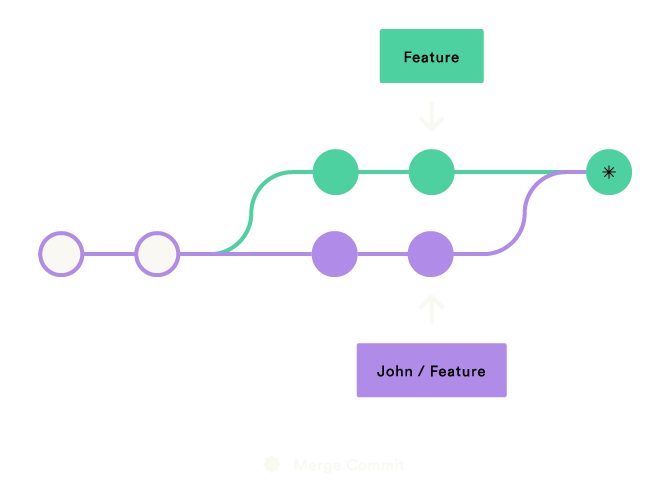
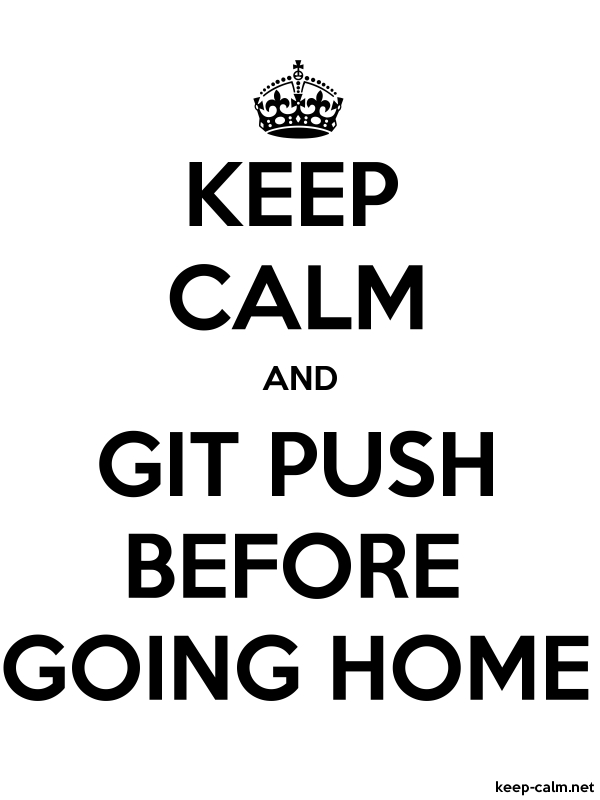

Wrap-up
Golden Git rules
- push often
- pull before add (avoid ‘empty’ merge commits)
- if undoing, git status first
- Write descriptive commit messages
When git goes wrong…

Reset
git checkout –– <file> to undo local changes
git reset HEAD <file> to unstage (undo add) a file
git reset HEAD^ to undo your latest commit
Reset
- git status to check what you have locally
- git reflog to find commit number
- git reset –soft commit# to reset local state
- git reset –hard commit# 🚨 to dismiss local state
git reset –soft commit#/HEAD^

Rebasing
- git rebase changes your git history!
- git rebase -interactive to clean you local branch history before merging

Where to go next?
Learn more!
Practice makes perfect 💪
Start using Git version control
Code (Git IDE integration)
Integrated Development Environment
- Matlab > R2014b
- Pycharm, Spyder
- RStudio
- (atom)
Matlab
Pycharm
RStudio

Text Documents
Git + Markdown + Pandoc

Why bother?
Flexibility separating content & form
Peace of mind rewrite without regrets
Reproducibility remember feedback related changes
Collaboration ask for feedback through pull requests
Atom text editor
Slides
Git + (pandoc + revealjs)
pandoc -t revealjs -s -o outputfile.html inputfile.md
git clone https://github.com/hakimel/reveal.js/
Publish your slides through GitHub Pages
Web-based
You can easily embed other web content and interact live
Project management
- Issues (example: this workshop!)
- Pull requests
- Milestones
- Project boards (example: UNICEF magicbox)
- Wiki (example: guard)
Thanks
